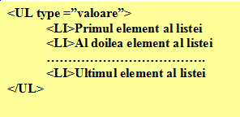
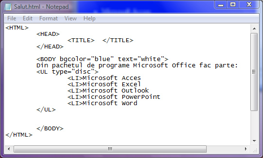
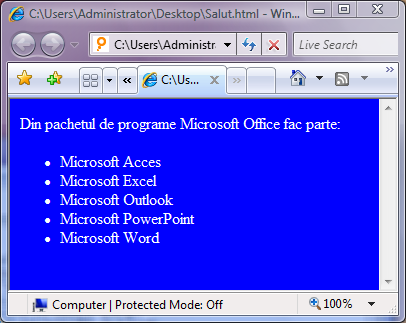
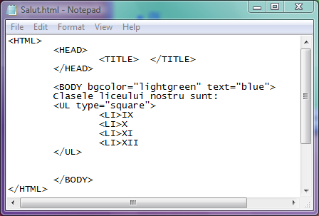
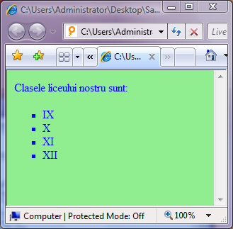

Liste neordonate
Listele neordonate sunt liste ale caror elemente nu sunt marcate dupa o logica
alfabetica sau numerica ci sunt pur si simplu marcate cu anumite elemente grafice. Orice
lista neordonata incepe cu etcheta UL (unordered list) si se incheie cu eticheta /UL. In
interiorul acestui bloc, fiecare element al listei este definit de o eticheta LI (list item).
Caracterul cu care vor fi marcate elementele listei de catre browser depind de atributul type
al etichetei UL, type putand lua valorile "square"(patratel plin), "disc"(cerc plin) sau
"circle"(cerc gol).
Iata sintaxa unei liste neordonate:

In continuare este prezentat un exemplu de lista neordonata:


... si iata un alt exemplu:


Inapoi la Liste...